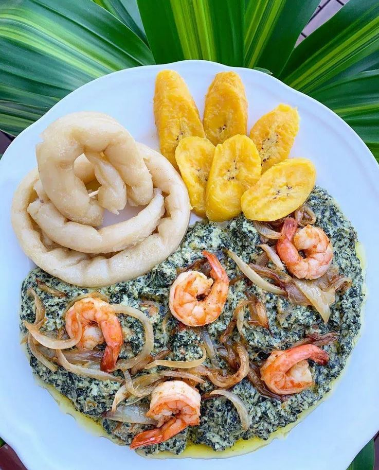
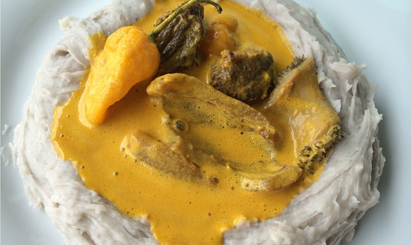
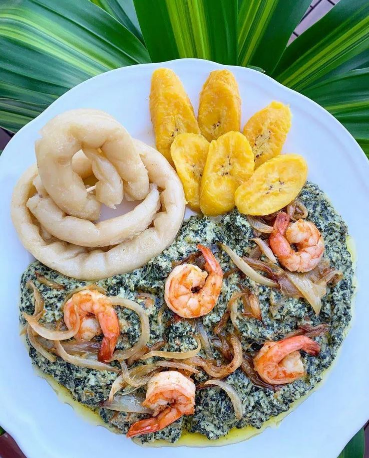
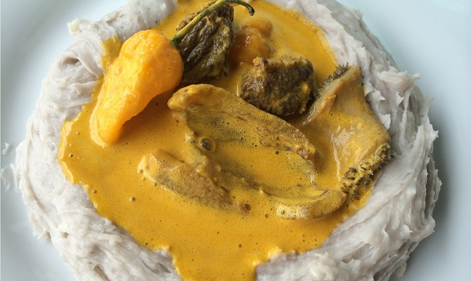

Essen und Trinken
Kamerunische Küche
 



Die Kamerunische Küche ist vielfältig und variert je nach Region. Sie basiert weitgehend auf pflanzlichen Produkten wie Maniok, Erdnüsse, Yams, Süßkartoffeln, Ndole(ähnlich wie Spinat), Mais, Hirse und tropischen Früchten wie beispielweise verschiedene leckere Bananensorten, Kochbananen, Ananas, Mango und Papaya. In Kamerun werden auch Fleisch wie Rind, Ziege, Schwein, Kalb sowie Fisch gegessen. Das Teilen von Speisen und Gestränken ist ein wichtiges Mittel zur Konsolidierung der sozialen Bindungen und ein Zeichen von Gastfreundschaft und Vertrauen.
Trinken
Mineralwasser und Limonaden sind in Kamerun fast überall verfügbar und besonders die einheimische Limonade ist köstlich. Es gibt leckeren Bieren wie Isenberg, Mützig, Beaufort, 33 Export, Guiness und Castel(nur um ein Paar zu nennen). Es gibt auch ein besonderer Getränk, Matango.